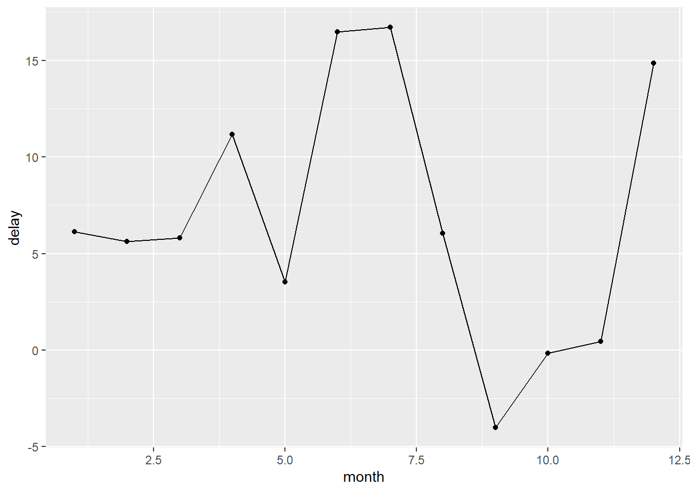
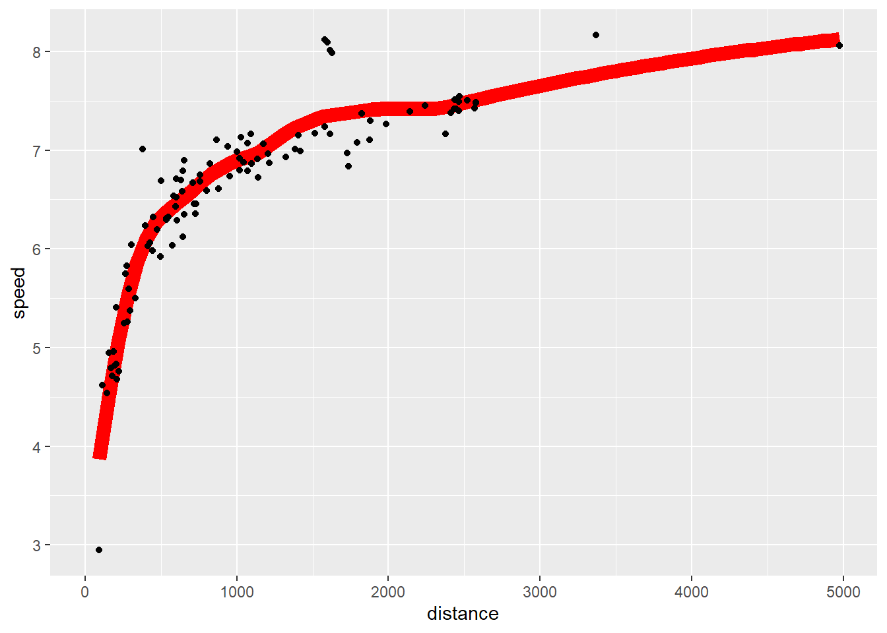

install.packages("styler")4 Workflow: code style
If you haven’t installed the styler package, run this once in the Console:
library(tidyverse)
library(nycflights13)The code in the “Strive for” and “Avoid” examples below is only shown, not run.
4.1 Names
Variable names (those created by <- and those created by mutate()) should use only lowercase letters, numbers, and _. Use _ to separate words within a name.
# Strive for:
short_flights <- flights |>
filter(air_time < 60)
# Avoid:
SHORTFLIGHTS <- flights |>
filter(air_time < 60)As a general rule of thumb, it’s better to prefer long, descriptive names that are easy to understand rather than concise names that are fast to type.
4.2 Spaces
Put spaces on either side of mathematical operators apart from ^ (i.e. +, -, ==, <, …), and around the assignment operator (<-).
# Strive for
z <- (a + b)^2 / d
# Avoid
z<-( a + b ) ^ 2/dDon’t put spaces inside or outside parentheses for regular function calls. Always put a space after a comma, just like in standard English.
# Strive for
mean(x, na.rm = TRUE)
# Avoid
mean (x ,na.rm=TRUE)You can add extra spaces if it improves alignment. For example, if you’re creating multiple variables in mutate(), you might add spaces so that all the = line up. This makes the code easier to skim.
flights |>
mutate(
speed = distance / air_time,
dep_hour = dep_time %/% 100,
dep_minute = dep_time %% 100
)4.3 Pipes
|> should always have a space before it and should typically be the last thing on a line.
# Strive for
flights |>
filter(!is.na(arr_delay), !is.na(tailnum)) |>
count(dest)
# Avoid
flights|>filter(!is.na(arr_delay), !is.na(tailnum))|>count(dest)If the function you’re piping into has named arguments (like mutate() or summarize()), put each argument on a new line. If the function doesn’t have named arguments (like select() or filter()), keep everything on one line unless it doesn’t fit, in which case put each argument on its own line.
# Strive for
flights |>
group_by(tailnum) |>
summarize(
delay = mean(arr_delay, na.rm = TRUE),
n = n()
)
# Avoid
flights |>
group_by(
tailnum
) |>
summarize(delay = mean(arr_delay, na.rm = TRUE), n = n())After the first step of the pipeline, indent each line by two spaces. RStudio will automatically put the spaces in for you after a line break following a |>. If you’re putting each argument on its own line, indent by an extra two spaces. Make sure ) is on its own line, and un-indented to match the horizontal position of the function name.
# Strive for
flights |>
group_by(tailnum) |>
summarize(
delay = mean(arr_delay, na.rm = TRUE),
n = n()
)
# Avoid: arguments and closing parenthesis indented too far
flights |>
group_by(tailnum) |>
summarize(
delay = mean(arr_delay, na.rm = TRUE),
n = n()
)4.4 ggplot2
The same basic rules that apply to the pipe also apply to ggplot2; just treat + the same way as |>.
flights |>
group_by(month) |>
summarize(delay = mean(arr_delay, na.rm = TRUE)) |>
ggplot(aes(x = month, y = delay)) +
geom_point() +
geom_line()
flights |>
group_by(dest) |>
summarize(
distance = mean(distance),
speed = mean(distance / air_time, na.rm = TRUE)
) |>
ggplot(aes(x = distance, y = speed)) +
geom_smooth(
method = "loess",
span = 0.5,
se = FALSE,
color = "red",
linewidth = 4
) +
geom_point()
4.5 Sectioning comments
(Notes to come.)
4.6 Exercises
1. Restyle the following pipelines following the guidelines above.
The messy versions:
flights|>filter(dest=="IAH")|>group_by(year,month,day)|>summarize(n=n(),
delay=mean(arr_delay,na.rm=TRUE))|>filter(n>10)
flights|>filter(carrier=="UA",dest%in%c("IAH","HOU"),sched_dep_time>
0900,sched_arr_time<2000)|>group_by(flight)|>summarize(delay=mean(
arr_delay,na.rm=TRUE),cancelled=sum(is.na(arr_delay)),n=n())|>filter(n>10)The clean versions:
flights |>
filter(dest == "IAH") |>
group_by(year, month, day) |>
summarise(n = n(), delay = mean(arr_delay, na.rm = TRUE)) |>
filter(n > 10)# A tibble: 365 × 5
# Groups: year, month [12]
year month day n delay
<int> <int> <int> <int> <dbl>
1 2013 1 1 20 17.8
2 2013 1 2 20 7
3 2013 1 3 19 18.3
4 2013 1 4 20 -3.2
5 2013 1 5 13 20.2
6 2013 1 6 18 9.28
7 2013 1 7 19 -7.74
8 2013 1 8 19 7.79
9 2013 1 9 19 18.1
10 2013 1 10 19 6.68
# ℹ 355 more rowsflights |>
filter(
carrier == "UA",
dest %in% c("IAH", "HOU"),
sched_dep_time > 0900,
sched_arr_time < 2000
) |>
group_by(flight) |>
summarise(
delay = mean(arr_delay, na.rm = TRUE),
cancelled = sum(is.na(arr_delay)),
n = n()
) |>
filter(n > 10)# A tibble: 74 × 4
flight delay cancelled n
<int> <dbl> <int> <int>
1 53 12.5 2 18
2 112 14.1 0 14
3 205 -1.71 0 14
4 235 -5.36 0 14
5 255 -9.47 0 15
6 268 38.6 1 15
7 292 6.57 0 21
8 318 10.7 1 20
9 337 20.1 2 21
10 370 17.5 0 11
# ℹ 64 more rows